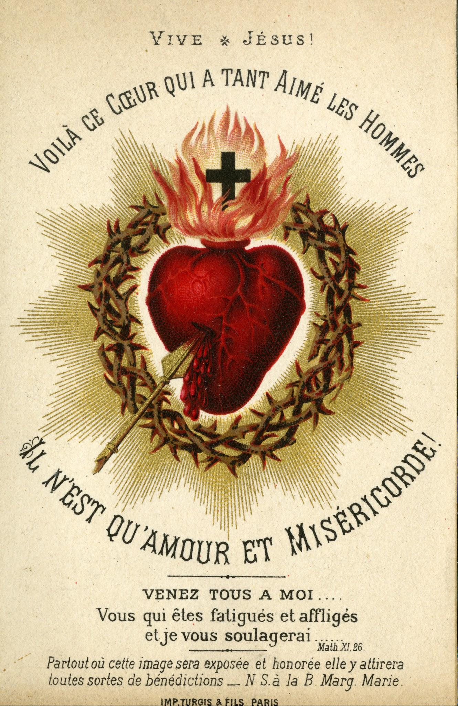

La Medaglia Miracolosa dell''Immacolata
Il trionfo dell''Immacolata
Nel 1830 Maria apparve a Santa Caterina Labouré nella cappella di Rue du Bac e si rivelò come Mediatrice di tutte le grazie. Dagli anelli tempestati di gemme con cui erano ornate le mani della beatissima Vergine emanavano raggi luminosi tali che l'intera figura della Madre di Dio era avvolta da luce splendente.
La santissima Vergine spiegò a Santa Caterina:
I raggi sono un simbolo delle grazie che riverso su coloro che me le chiedono. Con ciò mi fece comprendere quanto sia misericordiosa verso tutti coloro che la supplicano, quante grazie concede a tutti coloro che gliele chiedono, e quale gioia sia per lei quando può darci queste grazie. Vidi anche che da alcune di queste gemme non emanavano raggi. Ne fui molto meravigliata. Poi sentii la beatissima Vergine dire: Le gemme che non mandano raggi simboleggiano quelle grazie che le persone trascurano di chiedermi. [...]
Intorno all'apparizione della beatissima Vergine si formò una cornice ovale, sulla quale si dovevano leggere in lettere d'oro queste parole:
O Maria, concepita senza peccato, prega per noi che ricorriamo a te!
Poi sentii chiaramente e distintamente una voce che mi disse:
Fa' coniare una medaglia secondo questo modello. Tutte le persone che la indosseranno otterranno grandi grazie. Le grazie saranno abbondanti per coloro che la porteranno con fiducia al collo.
In quel momento l'immagine sembrò voltarsi, e vidi il rovescio della medaglia. Lì vidi la lettera M sormontata da una croce appoggiata su una barra. Sotto la M vidi i Sacratissimi Cuori di GESÙ e MARIA, il primo circondato da una corona di spine, il secondo trafitto da una spada.
(Santa Caterina Labouré e la Medaglia Miracolosa dell'Immacolata di Dr. Maria Cuylen, Imprimatur: Ordinariato Friburgo/Svizzera 29 novembre 1952, p. 31, 32.)
Dopo un esame di due anni di tutti questi eventi, l'Arcivescovo di Parigi diede il permesso di coniare la medaglia. Da allora un torrente di grazie cominciò a diffondersi su tutto il mondo, poiché ovunque la medaglia era desiderata.
Questo trionfo della Madre di Dio si manifestò attraverso innumerevoli miracoli di grazia, conversioni e guarigioni, tanto che presto se ne parlò solo come della Medaglia «Miracolosa» o «Meravigliosa».
Ma anche oggi il torrente di grazie non cessa, anzi diventa più forte che mai.
Novena in onore di Nostra Signora della Medaglia Miracolosa
Segno della Croce, destare il dolore per i peccati commessi; poi per tre volte l'invocazione:
O Maria, concepita senza peccato, prega per noi che ricorriamo a te.
(Quotidiano)
Giorno 1: Prima apparizione
Contempliamo l'immacolata Vergine come apparve per la prima volta a Santa Caterina Labouré. La devota novizia fu condotta dal suo Angelo Custode e presentata alla santa Vergine. Consideriamo la sua ineffabile gioia! Anche noi diventeremo felici come Santa Caterina se lavoriamo zelantemente alla nostra santificazione. Gioiremo nella felicità celeste se rinunceremo ai vani piaceri terreni.
Santissima Vergine, credo nella Tua santa e immacolata Concezione e la professo. O Vergine purissima Maria, per la Tua immacolata Concezione e gloriosa elezione a Madre di Dio, ottienimi dal Tuo diletto Figlio vera umiltà, puro amore, fedele obbedienza, intera e indivisa dedizione a Dio! Ottienimi la grazia di riconoscere e compiere la volontà di Dio in tutte le situazioni della vita. Solo così posso onorare Dio e lodare il Suo nome. Ma Tu, mia dolce Madre, ottienimi queste grazie divine per il tempo e l'eternità. Per questo sia lode e grazie a Te per tutta l'eternità. Amen.
Dopo la preghiera conclusiva quotidiana della novena seguono tre Ave Maria con l'aggiunta:
O Maria, concepita senza peccato, prega per noi che ricorriamo a te!
Giorno 2: Le lacrime di Maria
Contempliamo Maria che piange per le tribolazioni che verranno sul mondo, per le gravi offese al Cuore di GESÙ, suo Figlio, e per il disprezzo della Croce e la persecuzione dei suoi amati figli sulla terra. Confidiamo nel compassionevole cuore materno di Maria, e parteciperemo anche noi al frutto delle sue lacrime!
Santissima Vergine ...
Giorno 3: Maria, nostra protezione
Contempliamo la nostra Madre immacolata mentre parla nella sua apparizione a Suor Caterina:
Io stessa sarò con te. Ti ho sempre vegliato. Tutto sembrerà perduto; ma abbi fiducia! Sperimenterai la Mia visita e la protezione di DIO.
Sii anche per me, o Vergine immacolata, scudo e aiuto in ogni necessità!
Santissima Vergine ...
Giorno 4: Seconda apparizione
Quando Suor Caterina pregava il 27 novembre 1830, la Vergine Maria le apparve in splendida bellezza, in piedi sul globo, schiacciando la testa del serpente infernale. In questa apparizione vediamo il suo desiderio di proteggerci in ogni momento dal nemico e avversario infernale. Invochiamo con fiducia e amore la Madre immacolata!
Santissima Vergine ...
Giorno 5: Le mani di Maria
Contempliamo oggi come dalle mani di Maria emanano raggi luminosi. Ella disse:
I raggi sono un simbolo delle grazie che riverso su coloro che me le chiedono.
Non perdiamo grazie tanto grandi! Supplichiamo fervidamente, umilmente e perseverantemente, e Maria, la Vergine immacolata, le otterrà per noi!
Santissima Vergine ...
Giorno 6: Terza apparizione
Contempliamo Maria mentre appare a Caterina in splendido splendore, circondata da dodici stelle e sorridente piena di bontà. Dà l'ordine di far coniare una medaglia e promette molte grazie a tutti coloro che la indosseranno con amore e devozione. Indossiamo la Medaglia Miracolosa (segno e immagine di Maria) con piena fiducia, e la santa Vergine ci proteggerà come uno scudo in tutti i pericoli della nostra vita.
Santissima Vergine ...
Giorno 7: Maria, avvocata e rifugio
O Vergine meravigliosa, esaltata Regina, Signora senza macchia, sii mia avvocata, mio rifugio, la mia roccaforte su questa terra, la mia fortezza, la mia protezione in vita e in morte! Sei la gioia del mio cuore e la mia gloria in cielo! Stammi vicino nella prova e nella tentazione e fammi raggiungere sicuro Gesù, il Tuo divino Figlio.
Santissima Vergine ...
Giorno 8: Maria, Mediatrice di tutte le grazie
O Vergine immacolata, fa' che i raggi luminosi che emanano dalle Tue mani verginali illuminino la mia mente, perché io riconosca meglio il bene, e rianimino il mio cuore nella fede, nella speranza e nell'amore.
Santissima Vergine ...
Giorno 9: Maria davanti alla Croce di suo Figlio
O Vergine immacolata e Madre di Dio Maria, fa' sì che anche nella mia vita si erga la Croce come segno di vittoria, poiché sono intimamente unito a Te e al Tuo divino Figlio. Dammi grazia e forza di stare e perseverare con Te davanti alla Croce di Tuo Figlio finché il mio compito sulla terra non sia compiuto.
Santissima Vergine ...